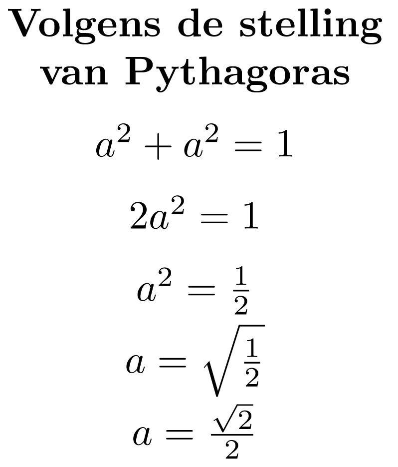
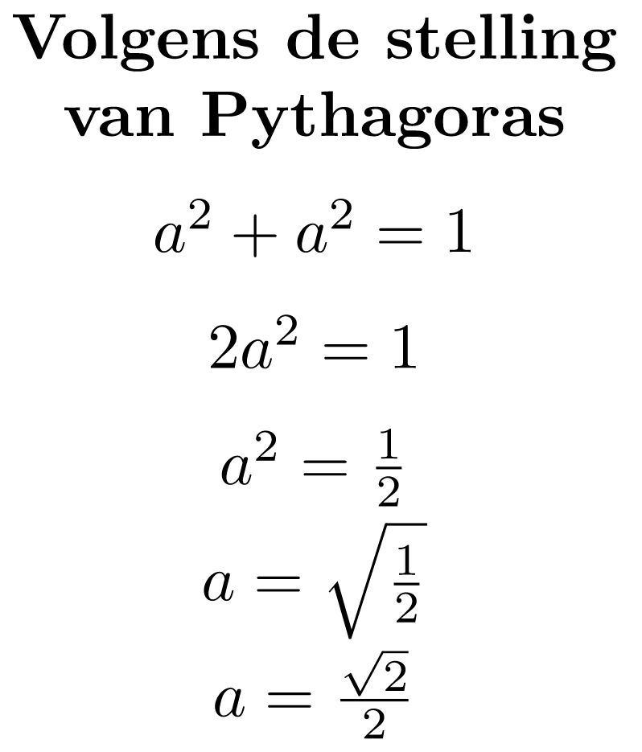

Curve Stitching

Dit ontwerp maakt gebruik van rechte lijnen om vormen te maken die gebogen lijken. Deze vormen worden soms met naald en draad genaaid of op papier getekend. Hier zijn wat voorbeelden van verschillende ontwerpen gemaakt met draad, computers, pennen en potloden, eentje is zelfs gemaakt met potloden aan elkaar gelijmd:
- Bespreek met je buur hoe je dit ontwerp kan tekenen. Ontwikkel een algoritme dat het eerste kwadrant van dit ontwerp genereert, gebruik daarna abstractie om de overige kwadranten te tekenen.
-
Schrijf een Snap!-programma om dit ontwerp te genereren.
Klik hier voor een hint om dit ontwerp te bouwen.
Hieronder staat een stuk van een tabel met coördinaten voor het eerste kwadrant van het ontwerp. Deze tabel laat zien welke punten op de y-as verbonden zijn met punten op de x-as.

Van (y-as) Naar (x-as) (0, 150) (0, 0) (0, 140) (10, 0) (0, 130) (20, 0) ... ... (0, 20) (130, 0) (0, 10) (140, 0) (0, 0) (150, 0) Klik hier voor een suggestie hoe je je programma in Snap! moet beginnen.
Er zijn veel mogelijke manieren om dit probleem te benaderen. Één manier is om eenfor-blok te gebruiken:

-
Bouw op dezelfde manier een frame om je ontwerp heen. Het resultaat moet eruit zien als de
afbeelding hieronder.
 Niet alleen de originele boog, maar ook het frame bestaat uit 4 losse afbeeldingen.
Niet alleen de originele boog, maar ook het frame bestaat uit 4 losse afbeeldingen.
-
Voeg nog een kopie van je ontwerp toe, alleen nu 45° gedraaid, zoals hieronder.
 Wil je een wiskundige hint?
Wil je een wiskundige hint?Gebruik de stelling van Pythagoras:
 

-
Hier zijn meer variaties die kleur en ingewikkelde geometrische vormen gebruiken. Maak deze
variaties in Snap! en bedenk ook zelf andere variaties.


-
Gebruik je kennis over animaties in Snap! om een animatie te maken gebaseerd op dit
ontwerp. Om dynamische beweging zoals rotatie te laten zien, zal je een nieuwe manier moeten
bedenken om je ontwerp te maken, die niet gebruik maakt van vaste coördinaten.
Wil je een voorbeeld zien?
Deze animatie verkent het artistieke concept van "negatiefruimte" door gebruik te maken van een rooster met draaiende kopieën van je ontwerp. Hoe zou je je programma aan kunnen passen om dit soort animaties te maken?